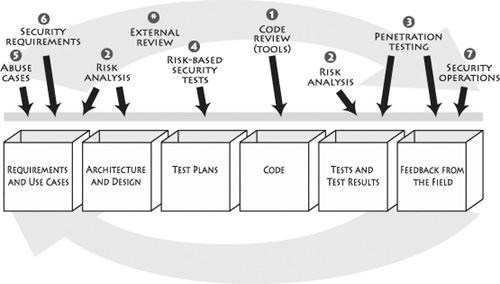

{% include JB/setup %}
{% raw %}
<div>
<a name="toppage" class="pcalibre calibre1"></a><table width="100%" border="0" cellspacing="0" cellpadding="0" class="sfbody"><tr valign="top" class="calibre2"><td class="calibre3"><a name="MainContent" class="pcalibre calibre1"></a><table width="95%" class="sfbody"><tr class="calibre2"><td class="pcalibre1 v"><!--Copyright (c) 2002 Safari Tech Books Online--><table width="100%" border="0" cellspacing="0" cellpadding="2" class="calibre4"><tr class="calibre2"><td valign="middle" class="v1 pcalibre1" height="5"></td></tr><tr class="calibre2"><td valign="middle" class="v1 pcalibre1"><table cellpadding="0" cellspacing="0" border="0" width="100%" class="calibre4"><tr class="calibre2"><td class="calibre6"><span class="calibre7"> </span>
                   
                  <span class="calibre7">   </span>
             <span class="calibre7"> </span></td></tr></table></td><td class="calibre8"/><td valign="middle" class="v2 pcalibre1"><a href="11061538.html" class="pcalibre calibre1"></a> 
           
          <span class="calibre7"><a target="_self" href="ch10.html" title="Previous section" class="pcalibre calibre1"></a></span>
				
				 
				
				<span class="calibre7"><a target="_self" href="ch10lev1sec2.html" title="Next section" class="pcalibre calibre1"></a></span></td></tr></table><div id="section" class="calibre15"><table width="100%" border="0" cellspacing="0" cellpadding="0" class="calibre4"><tr class="calibre2"><td valign="top" class="calibre8">Security Game Programming Networking Programming Greg Hoglund Gary McGraw Addison Wesley Professional Exploiting Online Games: Cheating Massively Distributed Systems<a name="ch10lev1sec1" class="pcalibre calibre1"></a>
<h3 id="643999-886" class="docSection1Title">Building Security In for Game Developers</h3>
<p class="docText">The biggest problem in computer security today is that most systems aren't constructed with security in mind. Reactive network technologies such as firewalls can help alleviate obvious script kiddie attacks on servers, but they do nothing to address the real security problem—bad software. If we want to solve the computer security problem, we need to do more to build secure software.</p>
<p class="docText">Software security is the practice of building software to be secure and to function properly under malicious attack. Online game software is clearly in need of software security.</p>
<p class="docText">The trinity of trouble—connectivity, complexity, and extensibility—largely influences the growth and evolution of the software security problem. Clearly these three issues have had a direct influence on computer <a name="iddle1293" class="pcalibre calibre1"></a><a name="iddle1678" class="pcalibre calibre1"></a><a name="iddle1701" class="pcalibre calibre1"></a><a name="iddle2038" class="pcalibre calibre1"></a>games. At first, connectivity through the Internet seemed to be a boon for security because a central server could check for legitimate licenses. But now that online games have become large and highly distributed, connectivity adds to security risk, linking people of all stripes, from the trustworthy to the criminal. Complexity and its growth has always been an issue in software, and game software is no exception. Online games are so massively distributed and share so much state with so many users that they're among the most complex distributed software systems in existence. That makes securing them difficult. Finally, because online games are made of software, extensibility is only natural. Sometimes extensibility is explicitly built in as part of the game (as in Second Life), but sometimes a game's true extensibility is brought to light by hackers and hobbyists as in TCs (see <a class="pcalibre6 pcalibre5 calibre1" href="ch09.html#ch09">Chapter 9</a>).</p>
<p class="docText">On the road to implementing a fundamental change in the way we build game software, we must first agree that software security is not security software. This is a subtle point often lost on development people, who tend to focus on functionality. Obviously, there are security functions in the world, and most modern game software includes security features; but adding features such as SSL to your game to cryptographically protect communications doesn't present a complete solution (especially when the client key is so easy to find; see <a class="pcalibre6 pcalibre5 calibre1" href="ch06.html#ch06">Chapter 6</a>). Software security is a system-wide issue that takes into account both security mechanisms (such as access control) and design for security (such as robust design that makes software attacks difficult). Sometimes these overlap, but often they don't.</p>
<p class="docText">Put another way, security is an emergent property of any software system, including online game software. A security problem is more likely to arise because of a problem in a system's standard-issue part (say, the interface to one of the many database modules or the handoff between world servers) than in some given security feature. This is an important reason why software security must be part of a full lifecycle approach. Just as you can't test quality into a piece of software, you can't spray paint security features onto a game and expect it to become secure. There's no such thing as magic crypto fairy dust—we need to focus on software security from the ground up. We need to build security into our online games.</p>
<p class="docText">As practitioners become aware of software security's importance, they are increasingly adopting and evolving a set of best practices to address the problem. Microsoft has carried out a noteworthy effort under its Trustworthy Computing Initiative. Many Cigital customers are in the midst of <a name="iddle1113" class="pcalibre calibre1"></a><a name="iddle1692" class="pcalibre calibre1"></a><a name="iddle2039" class="pcalibre calibre1"></a><a name="iddle2048" class="pcalibre calibre1"></a><a name="iddle2076" class="pcalibre calibre1"></a><a name="iddle2168" class="pcalibre calibre1"></a>enterprise-scale software security initiatives. Most approaches in practice today encompass training for developers, testers, and architects; analysis and auditing of software artifacts; and security engineering. In the fight for better software, treating the disease itself (poorly designed and implemented software) is better than taking an aspirin to stop the symptoms. There's no substitute for working software security as deeply into the development process as possible and taking advantage of the engineering lessons software practitioners have learned over the years.</p>
<a name="ch10lev2sec1" class="pcalibre calibre1"></a>
<h4 id="title-IDAPHIJL" class="docSection2Title">Software Security Touchpoints</h4>
<p class="docText">In the book <span class="docEmphasis">Software Security: Building Security In</span> (Addison-Wesley, 2006), one of us (McGraw) introduces a set of seven best practices called <span class="docEmphasis">touchpoints</span>. Whether or not you're a game developer, putting software security into practice requires making some changes to the way your organization builds software. The good news is that these changes don't need to be fundamental, earth shattering, or cost prohibitive. In fact, adopting a straightforward set of engineering best practices, designed in such a way that security can be interleaved into existing development processes, is often all it takes.</p>
<p class="docText">Integrating software security best practices into the software development lifecycle is one of the three pillars of software security. The software security best practices briefly introduced here have their basis in good software engineering and involve explicitly pondering the security situation throughout the software lifecycle. This means knowing and understanding common risks (including the ones described in this book), designing for security, and subjecting all software artifacts to thorough, objective risk analyses and testing.</p>
<p class="docText"><a class="pcalibre6 pcalibre5 calibre1" href="#ch10fig01">Figure 10-1</a> specifies the software security touchpoints and shows how software practitioners can apply them to the various software artifacts produced during software development. This means understanding how to work security engineering into requirements (we now understand that our very customers have darn good economic reasons to break our stuff), architecture (massively distributed systems are particularly tricky), design, coding (remember those timing bugs), testing, validation, measurement, and maintenance.</p>
<a name="ch10fig01" class="pcalibre calibre1"></a><p class="calibre28"><center class="calibre29">
<h5 class="docFigureTitle">Figure 10-1. The software security touchpoints as introduced and fleshed out in McGraw's book <span class="docEmphasis">Software Security: Building Security In</span>.</h5>
</center></p><p class="docText"><div class="v8 pcalibre3 pcalibre2"><a target="_blank" href="fig10-01_alt.jpg" class="pcalibre calibre20">[View full size image]</a></div></p>
<br class="calibre15"/>
<p class="docText">Although the artifacts in <a class="pcalibre6 pcalibre5 calibre1" href="#ch10fig01">Figure 10-1</a> resemble a traditional waterfall model, most organizations now follow an iterative approach, which means that they'll cycle through the touchpoints more than once as the software evolves. In any event, by focusing on the artifacts, we can avoid broader process issues (including the ever-present warfare surrounding which software process is the one true way and the light).</p>
<p class="docText">The software security touchpoints are designed to be process agnostic. That is, you can apply the touchpoints no matter which software process you use to build your software. As long as you're producing some minimal set of software artifacts (and every project should at least be producing code!), you can apply the touchpoints.</p>
<p class="docText">Some touchpoints are by their very nature more powerful than others, and you should adopt the most powerful ones first. Here are the touchpoints, in order of effectiveness:</p>
<div class="calibre122"><ol class="docList" type="1"><li class="calibre19"><div class="calibre123"><p class="docText">Code review with a static analysis tool</p></div></li><li class="calibre19"><div class="calibre123"><p class="docText">Architectural risk analysis</p></div></li><li class="calibre19"><div class="calibre123"><p class="docText">Penetration testing</p></div></li><li class="calibre19"><div class="calibre123"><p class="docText">Risk-based security tests</p></div></li><li class="calibre19"><div class="calibre123"><p class="docText">Abuse cases</p></div></li><li class="calibre19"><div class="calibre123"><p class="docText">Security requirements</p></div></li><li class="calibre19"><div class="calibre123"><p class="docText">Security operations</p></div></li></ol></div>
<p class="docText">For much more about the touchpoints, see <span class="docEmphasis">Software Security</span>, where you will find a chapter devoted to each.</p>
<p class="docText"><a name="iddle1032" class="pcalibre calibre1"></a><a name="iddle1039" class="pcalibre calibre1"></a><a name="iddle1062" class="pcalibre calibre1"></a><a name="iddle1307" class="pcalibre calibre1"></a><a name="iddle1396" class="pcalibre calibre1"></a><a name="iddle2040" class="pcalibre calibre1"></a><a name="iddle2043" class="pcalibre calibre1"></a><a name="iddle2044" class="pcalibre calibre1"></a><a name="iddle2049" class="pcalibre calibre1"></a><a name="iddle2295" class="pcalibre calibre1"></a>The suggested ordering won't be a perfect fit for every organization. In fact, the ordering reflects a bias developed over many years of applying these practices in code-o-centric organizations. For that reason, code review comes before architectural risk analysis. However, the fact is that both of the top two touchpoints are critical. If you do code review and skip architectural risk analysis, you will not properly address the software security problem.</p>
<p class="docText">As we've seen throughout this book, the kinds of software defects that attackers go after come in two varieties: bugs and flaws. Code review aims to find the bugs. Architectural risk analysis aims to find the flaws. If you skip one or the other, you're most likely to solve only half the problem. (Bugs and flaws are split 50/50.) Either way, the top two touchpoints can be swapped around without any loss of generality.</p>
<p class="docText">As for the rest of the touchpoints, the ranking presented here is based on years of experience applying the touchpoints at many different kinds of organizations, ranging from large independent software vendors to huge investment banks. The ordering is not absolute. However, any attempt to change the order, say, by doing penetration testing before you do code review, is likely to be not as successful as the one we endorse here.</p>
<a name="ch10lev2sec2" class="pcalibre calibre1"></a>
<h4 id="title-IDAXNIJL" class="docSection2Title">Black Hats and White Hats</h4>
<p class="docText">Two kinds of activities—black hat and white hat—intertwine to make up software security. This idea serves as inspiration for the yin/yang logo demarking this series of books. The yin/yang design is the classic Eastern symbol related to the inextricable mixing of standard Western polemics. Eastern philosophies are for this reason called holistic. A holistic approach, mixing yin and yang—that is, mixing the black hat and white hat approaches—is just what the doctor ordered.</p>
<p class="docText"><span class="docEmphasis">Destructive activities</span> are about attacks, exploits, and breaking software. This book shows firsthand just what destructive activities are like for online games. Without directly and clearly discussing attacks in a realistic manner (such as we do throughout this book), defenses can't be properly devised and put into place. These kinds of things are represented by the black hat. That is, they are generally considered "bad guy" activities. <span class="docEmphasis">Constructive activities</span> are about design, defense, and functionality. These are represented by the white hat.</p>
<p class="docText">Perhaps a less judgmental way to think about the dichotomy is in terms of defense and offense. Neither defense nor offense is intrinsically bad or good, and both are necessary to play almost any sport well.</p>
<p class="docText"><a name="iddle1289" class="pcalibre calibre1"></a><a name="iddle1558" class="pcalibre calibre1"></a><a name="iddle2042" class="pcalibre calibre1"></a><a name="iddle2045" class="pcalibre calibre1"></a><a name="iddle2046" class="pcalibre calibre1"></a>If you're a game developer who's serious about countering the security problems explained in this book, you should convince your shop to adopt the software security touchpoints.</p>
<ul class="calibre18"></ul></td></tr></table><table width="100%" border="0" cellspacing="0" cellpadding="2" class="calibre4"><tr class="calibre2"><td valign="middle" class="v1 pcalibre1" height="5"></td></tr><tr class="calibre2"><td valign="middle" class="v1 pcalibre1"><table cellpadding="0" cellspacing="0" border="0" width="100%" class="calibre4"><tr class="calibre2"><td class="calibre6"><span class="calibre7"> </span>
                   
                  <span class="calibre7">   </span>
             <span class="calibre7"> </span></td></tr></table></td><td class="calibre8"/><td valign="middle" class="v2 pcalibre1"><a href="11061538.html" class="pcalibre calibre1"></a> 
           
          <span class="calibre7"><a target="_self" href="ch10.html" title="Previous section" class="pcalibre calibre1"></a></span>
				
				 
				
				<span class="calibre7"><a target="_self" href="ch10lev1sec2.html" title="Next section" class="pcalibre calibre1"></a></span></td></tr></table><table width="100%" border="0" cellspacing="0" cellpadding="2" class="calibre4"><tr class="calibre2"><td valign="top" class="calibre14"><span class="calibre7"></span></td></tr></table></div><!--IP User 2--></td></tr></table></td><td class="calibre3">
                         
                      </td></tr><tr class="calibre2"><td colspan="3" valign="bottom" class="calibre3"><br class="calibre15"/><p class="v5 pcalibre1"></p><br class="calibre15"/></td></tr></table></div>

{% endraw %}

